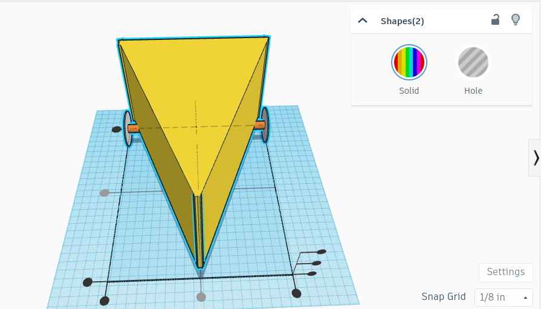

Welcome to Nathaniel Yoo's Intro to Engineering Website
Update 1:
8/25/23
Today we had a full class activity outside in the quad.
The class was split into two teams and using half pipes, we had to get a marble into a bucket at the end.
Each person had to hold the pipe at least once, we only had a couple so we had to pass them down to make sure everyone contributes.
Of course our team won because we are simply better.
I also finished the front page of this website (the fake 404) and successfully got everything else working.
Update 2:
9/11/23
This is the first journal entry in a while.
Since the last journal entry, we had 2 quizzes, one on the 1st and one today.
We've used TinkerCad to create our Rube Goldberg Machine CAD and started building the real thing.
We also had a competition on who could build the best home appliance using TinkerCad.
Update 3:
9/25/23
Last week we finished our physical Rube Goldberg Machine made out of cardboard and tape.
We had quite a bit of trouble with our pulley and had to adjust the end of our machine to make it work.
In the end, we used around 15 marbles to power the pulley, 16 if you include the big marble that pushed our lever.
Our big marble was up against a wall and would move when the pulley hit the platform, but it didn't really work until I made a wedge out of scrap cardboard and tape.
Update 4:
9/29/23
This past week we started our computer engineering lesson.
We learned about what computer engineers do and how it works.
We also dissected a desktop computer on Wednesday.
We took everything apart and put it back together but we were missing a cpu and RAM so it didn't turn on.
Update 5:
10/6/23
This week we learned about bioengineering and its applications in real life.
On Wednesday we made a prosthetic hand with carboard, rubber bands, and string.
We used rubber bands to hold the strings in place and act as joints for the fingers.
I did most of the work and Brandon mastered using it to pick up water bottles.
Update 6:
10/20/23
Last week we started our aerospace engineering unit.
Aerospace engineering is a branch of engineering that studies aircraft and spacecraft.
Last week on Friday, we made a CAD of a bottle rocket.
On Monday I bought a 2 liter bottle of Coke and brought on Wednesday so we could make our actual rocket.
Today, we launched them on the uppper field using water and compressed air.
We got 2 attempts, our first one went pretty high and did a couple flips in the air.
Our second one went straight into the ground and went backwards.
We managed to spray Mr. Kim's ankles and get his socks wet though.
Update 7:
10/26/23
This week we began our environmental Environmental Engineering unit.
Environmental Engineering is a field of engineering that integrates principals
of science and engineering to improve the natural environment. Today we made a
water filter using cotton balls, sand, rocks, and a 2 liter soda bottle. We
compacted the cotton balls as the bottom layer, then poured sand on top, finally,
we put rocks to complete our filter. Our filter was able to make somewhat-clear water
which was an improvement from the sludge we started with.
Update 8:
11/13/23
Two weeks ago we started our Electrical Engineering unit. Electrical Engineering is a field of engineering that works with electricity.
We started with messing around on TinkerCad using the circuit feature. We used TinkerCad to simulate connecting circuits on a breadboard
to turn on LEDs. Initially, I had trouble connecting wires to turn on the LEDs but after a lot of trial and error I managed to hook up the
wires correctly. However, just connecting the wires wasn't enough because the LEDs kept exploding due to too many Volts going into them.
I had to adjust the resistors to lower the amount of energy and mess around with the wires some more. Last week we applied what we learned
in real life with actual breadboards. All we had to do was apply what we learned onto the physical thing so it was fairly simple.
Update 9:
12/1/2
Before the break, we started our Business Engineering unit. Business Engineering is a field of engineering that combines business administration
and technology. For our project, we had to come up with a business pitch, kind of like the ones on Shark Tank. Our pitch consisted of a couple
slides and our product was the Blue Shell from Mario Kart. Our product was a heat-seeking smoke bomb, similar to the ones from the game. We had
some issues coming up with pros and cons of our product since it was essentially a bomb but we made it work.
Update 10:
1/10/24
Before winter break started, we had our Civil Engineering unit. For this unit I built a spaghetti bridge with Brandon. Our bridge was made of
40 spaghetti noodles and wood glue. Our bridge weighed 34.1 grams and carried the most weight in our class at 1514 grams. Our bridge scored
44.4 points (1514/34.1 = 44.4). The design of our bridge was not to look good, but to carry as much weight as possible while weighing as
little as possible. Our design worked very well as it held more than 5 cups of water which was way more than I thought it would.
Our bridge weighed 34.1 grams.
Our bridge held 1514 grams
The ratio of weight of bridge to weight held was 1:44
The heaviest part of our bridge was where the pieces of our bridge connected because the amount of glue needed to hold them together.
The design of our bridge came from our imagination as well as a lack of time.
Our design worked way better than I thought it would, holding the most water in the class while also being relatively light.
As expected, the point of failure for our bridge was the center as it simply snapped under the weight of all that water.
The only thing I can think of to improve our bridge is to add more spaghetti and make it thicker.
Update 11:
1/17/24
Last week we started our Chemical Engineering unit. Chemical Engineering is the field of engineering that deals with the large scale production
of chemical reactions. For our project we made oobleck. Unfortunately our oobleck was very poorly made and looked identical to milk. For the
video below, we used footage from Alex Wilson's group to show what oobleck is supposed to look like.
Update 12:
1/29/24
Two weeks ago we started our first BIG project. Our group, me, Brandon, and Noah, chose to make a mouse trap car over the Arduino version.
Noah single-handedly carried the making of the CAD and the calculations for the design. To be completely honest, I didn't actually do much
except for writing the proposal so I plan to make it up during the building phase which starts later this week. For our design, we decided
on a triangle shaped car with a removable lid. Brandon plans on painting the cover yellow with black dots to make it look like a block of
cheese. He also decided that we'd use the name "Cheddar Chariot TM" for the car.
